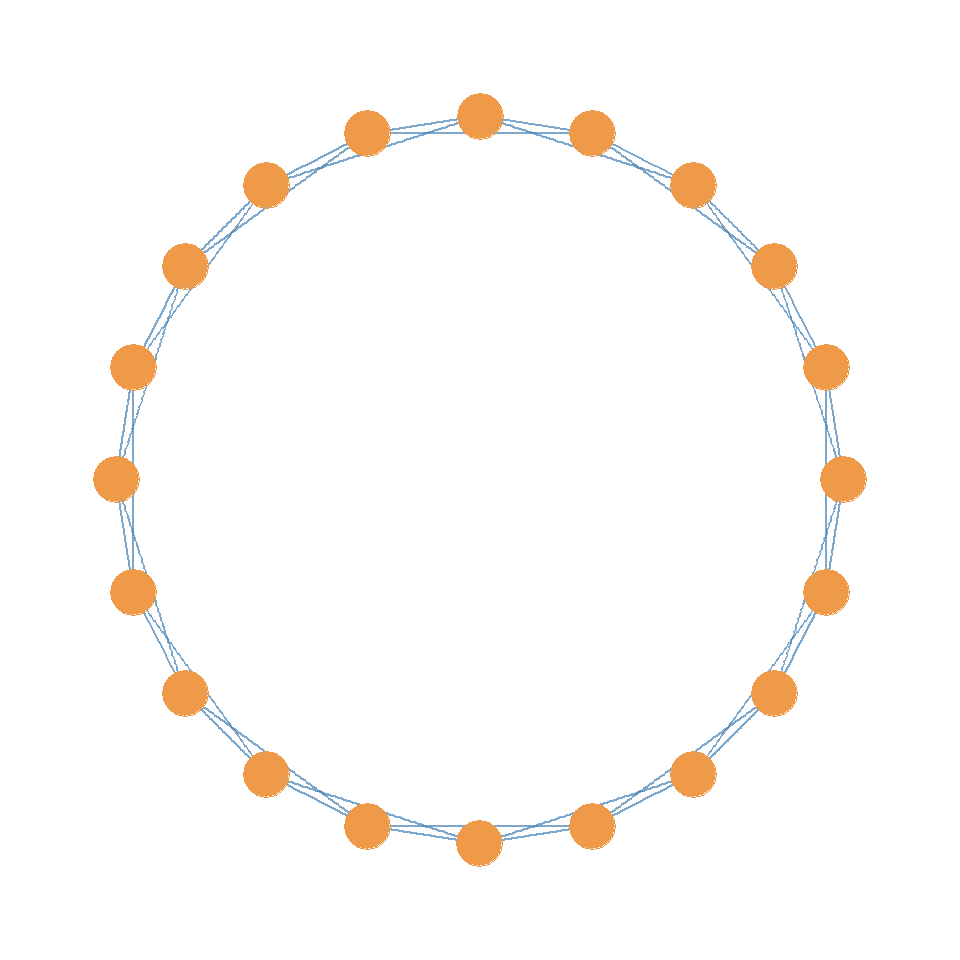
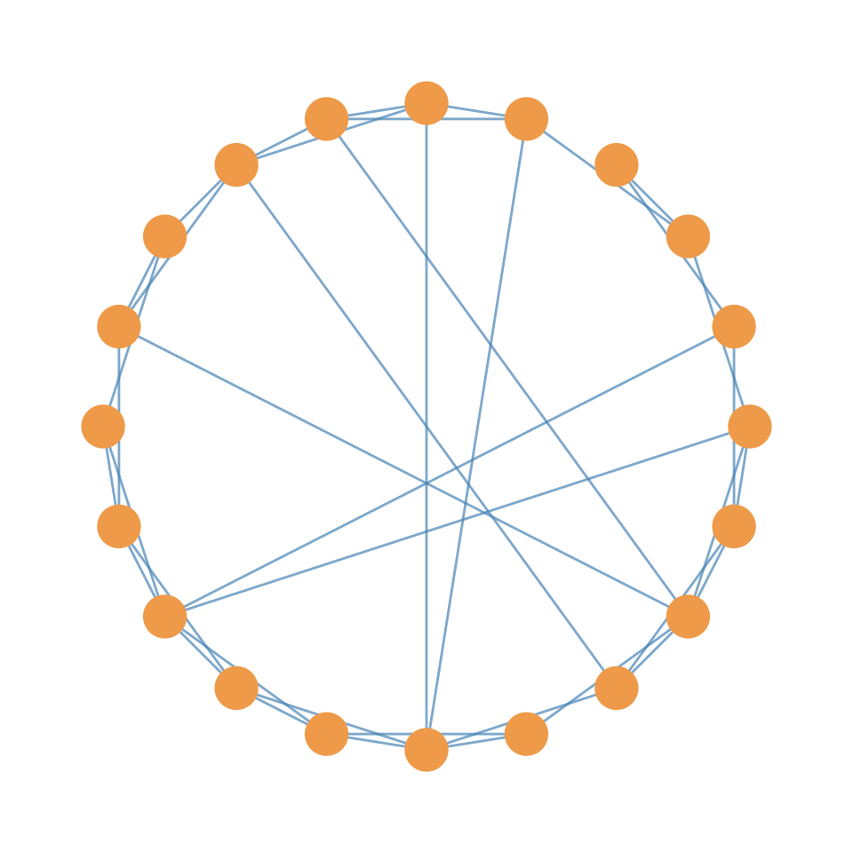
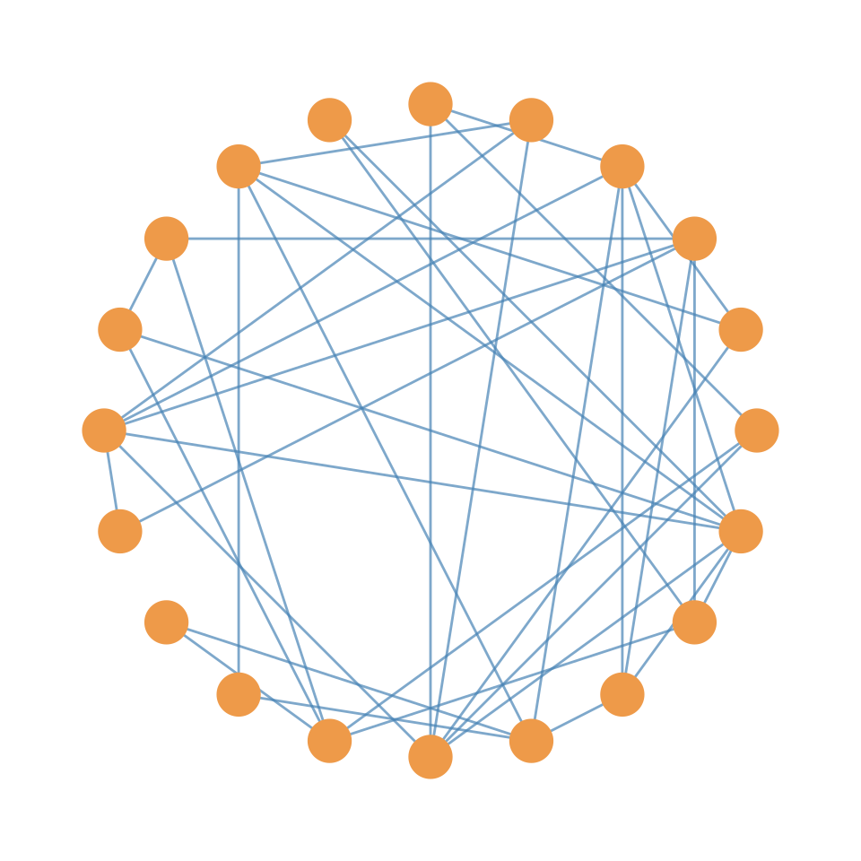
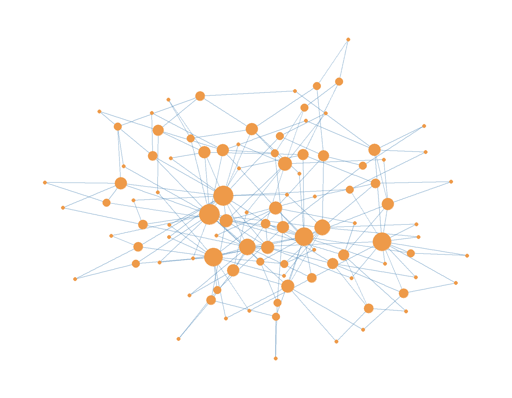

53 The Small World Phenomenon
53.1 Definition the Small World
The small world phenomenon describes a type of social network structure where individuals are highly connected within their local circles, yet the overall network allows for surprisingly short paths between any two individuals (Milgram 1967). This phenomenon is crucial for understanding how information and innovations can spread rapidly through a network, even when there’s a high degree of local interconnectedness.
The small world phenomenon is observed when we find two key features at the whole network level.
First, we observe high clustering, referring to the degree to which a person’s contacts are interconnected among themselves (Granovetter 1973). In a highly clustered network, if person A knows person B, and person B knows person C, then person A is also likely to know person C. This creates “triangles” or “closed triads” in the network. High clustering can facilitate collaboration and familiarity within groups, but if it dominates over broader connectivity, it can hinder the generation of new ideas. The Clustering Coefficient (\(CC_i\)) is a metric used to quantify this at the ego-network level, or the network centered around a focal individual or “ego” (see Chapter 35). The clustering coefficient is obtained by comparing the number of actual ties (\(m\)) among an ego’s contacts to the total number of possible ties among those contacts (\(n(n-1)/2\)), where \(n\) is the number of alters. More alter-alter connections result in a higher clustering coefficient. The average clustering coefficient across all ego’s in the network is the network’s clustering coefficient.
Secondly, we also observe Low Average Path Length at the whole network level. Recall from Chapter 13, that a path in a network is a sequence of connections between nodes, and its length is the number of edges it contains. A “shortest path” or “geodesic” is the path with the fewest edges between two nodes. For a network, having a low average path length means that, on average, any two individuals in the network can be connected through a surprisingly small number of intermediaries (number of inner nodes in the path as discussed in Chapter 13). This is often conceptualized as “\(n\)-degrees of separation”. This characteristic allows for the efficient and rapid transmission of information across the network.
53.2 Classic Empirical Examples of the Small World Phenomenon
The concept of the small world phenomenon has been empirically demonstrated through various studies. The classic study is Milgram’s Small World Experiment (Milgram 1967). This seminal study was the first to demonstrate the “six degrees of separation” idea. Starting individuals in Nebraska and Boston were tasked with sending a letter to a target person, such as a Boston stockbroker, by forwarding it through a chain of acquaintances. Milgram found that out of 296 starting participants, 64 chains (29%) successfully reached the target. The average length of these completed chains was 5.2 intermediaries (a little bit under six!). A large majority (86%) of the initial transmissions were sent to friends and acquaintances, rather than relatives (14%). The choice of intermediaries was influenced by homophily, meaning similarity in age, gender, and socioeconomic status.
Dodds et al. (2003) set out to replicate Milgram’s study for the digital era. This study involved 98,847 participants from 166 countries trying to reach 18 different target persons. DMW found that the average chain length observed was 4.05, and after accounting for attrition (incomplete chains), the median length was between 5 and 7 steps (pretty close to six!). Participants frequently chose to send messages to “friends” (as opposed to kin or co-workers) and to ties formed through work and school affiliations. The most effective chains often involved professional ties (in contrast to friends or kin) and connections from work or higher education as social foci. Geographic proximity and similarity of occupation were identified as primary search heuristics, and homophily was found to decrease chain length.
Killworth and Bernard (1979) “Reverse Small World” Experiment was useful for studying the natural search strategies of people when trying to reach others that they are not directly connected to. Participants were given a list of targets (some long, some thousands) and asked to name the first contact they would use to reach that target, along with reasons for their choice. This revealed that people often chose friends, acquaintances, or family as their initial link, demonstrating how individuals use local information and social cues to navigate their networks.
53.3 Computational Models of the Small World
53.3.1 Watts-Strogatz Model
The Watts-Strogatz Model (Watts and Strogatz 1998) is a dynamic model explains how small-world networks are generated. It starts with a regular graph where each node is connected to its nearest neighbors. By introducing a small amount of “random rewiring” (randomly reattaching one end of a selected edge to a new random node with a small probability, \(p\)), the model demonstrates a high nonlinear effect on path length. Even a small fraction of these random “shortcuts” or “bridging ties” can drastically reduce the average path length across the network, while largely preserving the high clustering coefficient, mimicking real social networks. This structure implies efficient information diffusion.



For instance, Figure 53.1 illustrates the transition from a regular graph (where \(p=0\)) to a small-world network (where \(p=0.1\)) and finally to a random network (where \(p=1\)). The regular graph has high clustering but long path lengths, while the small-world network maintains high clustering with significantly reduced path lengths due to the presence of shortcuts. The random network, on the other hand, has low clustering and short path lengths.
53.3.2 Preferential Attachment Model
The Barabasi-Albert Model (Barabási and Albert 1999) also known as the preferential Attachment Model is a “growing model” of the emergence of social networks based on the idea that new nodes preferentially connect to existing nodes that already have a high number of connections (“hubs”). This process leads to heterogeneous (high variance) degree distributions, also known as “scale-free” networks, which are characterized by a few highly connected hubs. While these hubs contribute to a “small diameter” (low average path length), networks generated by this model typically exhibit a low clustering coefficient, thus not fully capturing the high clustering observed in true small-world networks.

Figure 53.1 illustrates the emergence of high-degree hubs in a network generated by the Barabási-Albert model. The larger nodes represent those with a higher degree (more connections), demonstrating the preferential attachment mechanism where new nodes are more likely to connect to already well-connected nodes. Technically, this model can produce small-world properties in terms of low average path length due to the presence of hubs, which create shortcuts connecting more peripheral nodes, but it does not capture the high clustering coefficient characteristic of true small-world networks.
Watts et al. (2002) provide a computational model of how people search and “navigate” the small world networks in which they are embedded and are thus able to reach others who they are indirectly connected to. They propose that real human social networks are “searchable” because they are structured around nested groups or communities. Individuals possess two types of (partial) information that aid in this search.
First, They use a social (group) distance heuristic, exploiting a global understanding of one’s and one’s neighbor’s position within the group structure, which is not equivalent to graph-theoretic distance. Secondly, they use search heuristics to construct a path to a target person. These include using homophily which represents similarity on characteristics like location or occupation as a proxy for graph-theoretic distance (as discussed in Chapter 37) or a “hub strategy”, which involves selecting contacts with high status or many connections.